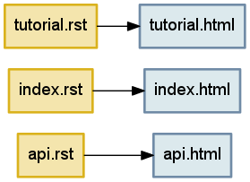
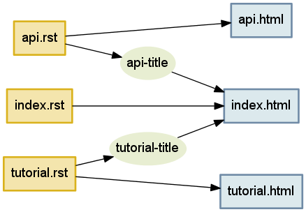
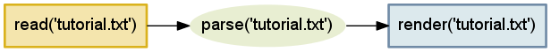
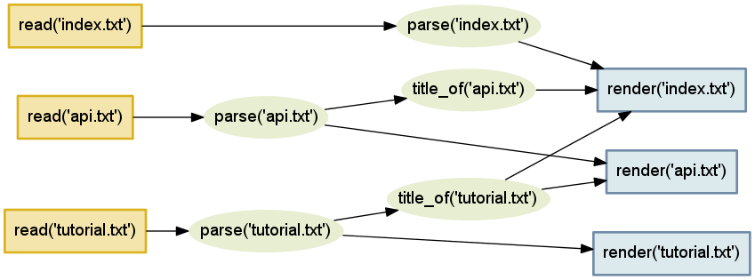

Contingent: A Fully Dynamic Build System
by Brandon Rhodes and Daniel Rocco
Brandon Rhodes started using Python in the late 1990s, and for 17 years has maintained the PyEphem library for amateur astronomers. He works at Dropbox, has taught Python programming courses for corporate clients, consulted on projects like the New England Wildflower Society’s “Go Botany” Django site, and will be the chair of the PyCon conference in 2016 and 2017. Brandon believes that well-written code is a form of literature, that beautifully formatted code is a work of graphic design, and that correct code is one of the most transparent forms of thought.
Daniel Rocco loves Python, coffee, craft, stout, object and system design, bourbon, teaching, trees, and Latin guitar. Thrilled that he gets to write Python for a living, he is always on the lookout for opportunities to learn from others in the community, and to contribute by sharing knowledge. He is a frequent speaker at PyAtl on introductory topics, testing, design, and shiny things; he loves seeing the spark of wonder and delight in people’s eyes when someone shares a novel, surprising, or beautiful idea. Daniel lives in Atlanta with a microbiologist and four aspiring rocketeers.
Introduction
Build systems have long been a standard tool within computer programming.
The standard make build system,
for which its author won the ACM Software System Award,
was first developed in 1976.
It not only lets you declare
that an output file depends upon one (or more) inputs,
but lets you do this recursively.
A program, for example, might depend upon an object file
which itself depends upon the corresponding source code:
prog: main.o
cc -o prog main.o
main.o: main.c
cc -C -o main.o main.c
Should make discover, upon its next invocation,
that the main.c source code file
now has a more recent modify time than main.o,
then it will not only rebuild the main.o object file
but will also rebuild prog itself.
Build systems are a common semester project assigned to undergraduate computer science students — not only because build systems are used in nearly all software projects, but because their construction involves fundamental data structures and algorithms involving directed graphs (which this chapter will later discuss in more detail).
With decades of use and practice behind build systems,
one might expect them to have become completely general-purpose
and ready for even the most extravagant demands.
But, in fact, one kind of common interaction between build artifacts —
the problem of dynamic cross-referencing —
is handled so poorly by most build systems
that in this chapter we are inspired
to not only rehearse the classic solution
and data structures used to solve the make problem,
but to extend that solution dramatically, to a far more demanding domain.
The problem, again, is cross-referencing. Where do cross-references tend to emerge? In text documents, documentation, and printed books!
The Problem: Building Document Systems
Systems to rebuild formatted documents from source always seem to do too much work, or too little.
They do too much work when they respond to a minor edit by making you wait for unrelated chapters to be re-parsed and re-formatted. But they can also rebuild too little, leaving you with an inconsistent final product.
Consider Sphinx, the document builder
that is used for both the official Python language documentation
and many other projects in the Python community.
A Sphinx project’s index.rst
will usually include a table of contents:
Table of Contents
=================
.. toctree::
install.rst
tutorial.rst
api.rst
This list of chapter filenames
tells Sphinx to include a link to each of the three named chapters
when it builds the index.html output file.
It will also include links to any sections within each chapter.
Stripped of its markup,
the text that results from the above title
and toctree command might be:
Table of Contents
• Installation
• Newcomers Tutorial
• Hello, World
• Adding Logging
• API Reference
• Handy Functions
• Obscure Classes
This table of contents, as you can see, is a mash-up
of information from four different files.
While its basic order and structure come from index.rst,
the actual titles of each chapter and section
are pulled from the three chapter source files themselves.
If you later reconsider the tutorial’s chapter title —
after all, the word “newcomer” sounds so quaint,
as if your users are settlers who have just arrived in pioneer Wyoming —
then you would edit the first line of tutorial.rst
and write something better:
-Newcomers Tutorial
+Beginners Tutorial
==================
Welcome to the tutorial!
This text will take you through the basics of...
When you are ready to rebuild,
Sphinx will do exactly the right thing!
It will rebuild both the tutorial chapter itself,
and the index.
(Piping the output into cat makes Sphinx
announce each rebuilt file on a separate line,
instead of using bare carriage returns
to repeatedly overwrite a single line with these progress updates.)
$ make html | cat
writing output... [ 50%] index
writing output... [100%] tutorial
Because Sphinx chose to rebuild both documents,
not only will tutorial.html now feature its new title up at the top,
but the output index.html will display the updated chapter title
in the table of contents.
Sphinx has rebuilt everything so that the output is consistent.
What if your edit to tutorial.rst is more minor?
Beginners Tutorial
==================
-Welcome to the tutorial!
+Welcome to our project tutorial!
This text will take you through the basics of...
In this case there is no need to rebuild index.html
because this minor edit to the interior of a paragraph
does not change any of the information in the table of contents.
But it turns out that Sphinx is not quite as clever
as it might have at first appeared!
It will go ahead and perform the redundant work of rebuilding
index.html even though the resulting contents
will be exactly the same.
writing output... [ 50%] index
writing output... [100%] tutorial
You can run diff
on the “before” and “after” versions of index.html
to confirm that your small edit
has had no effect on the front page —
yet Sphinx made you wait while it was rebuilt anyway.
You might not even notice the extra rebuild effort
for small documents that are easy to compile.
But the delay to your workflow can become significant
when you are making frequent tweaks and edits
to documents that are long, complex, or that involve the generation
of multimedia like plots or animations.
While Sphinx is at least making an effort
not to rebuild every chapter when you make a single change —
it has not, for example, rebuilt install.html or api.html
in response to your tutorial.rst edit —
it is doing more than is necessary.
But it turns out that Sphinx does something even worse: it sometimes does too little, leaving you with inconsistent output that could be noticed by users.
To see one of its simplest failures, first add a cross reference to the top of your API documentation:
API Reference
=============
+Before reading this, try reading our :doc:`tutorial`!
+
The sections below list every function
and every single class and method offered...
With its usual caution as regards the table of contents,
Sphinx will dutifully rebuild both this API reference document
as well as the index.html home page of your project:
writing output... [ 50%] api
writing output... [100%] index
In the api.html output file you can confirm
that Sphinx has included the attractive human-readable title
of the tutorial chapter into the cross reference’s anchor tag:
<p>Before reading this, try reading our
<a class="reference internal" href="tutorial.html">
<em>Beginners Tutorial</em>
</a>!</p>
What if you now make another edit
to the title at the top of the tutorial.rst file?
You will have invalidated three output files:
-
The title at the top of
tutorial.htmlis now out of date, so the file needs to be rebuilt. -
The table of contents in
index.htmlstill has the old title, so that document needs to be rebuilt. -
The embedded cross reference in the first paragraph of
api.htmlstill has the old chapter title, and also needs to be rebuilt.
What does Sphinx do?
writing output... [ 50%] index
writing output... [100%] tutorial
Whoops.
Only two files were rebuilt, not three. Sphinx has failed to correctly rebuild your documentation.
If you now push your HTML to the web,
users will see the old title in the cross reference
at the top of api.html
but then a different title — the new one —
once the link has carried them to tutorial.html itself.
This can happen for many kinds of cross reference that Sphinx supports:
chapter titles, section titles, paragraphs,
classes, methods, and functions.
Build Systems and Consistency
The problem outlined above is not specific to Sphinx.
Not only does it haunt other document systems, like LaTeX,
but it can even plague projects
that are simply trying to direct compilation steps
with the venerable make utility,
if their assets happen to cross-reference in interesting ways.
As the problem is ancient and universal, its solution is of equally long lineage:
$ rm -r _build/
$ make html
If you remove all of the output,
you are guaranteed a complete rebuild!
Some projects even alias rm -r to a target named clean
so that only a quick make clean is necessary to wipe the slate.
By eliminating every copy of every intermediate or output asset,
a hefty rm -r is able to force the build to start over again
with nothing cached — with no memory of its earlier state
that could possibly lead to a stale product.
But could we develop a better approach?
What if your build system were a persistent process that noticed every chapter title, every section title, and every cross-referenced phrase as it passed from the source code of one document into the text of another? Its decisions about whether to rebuild other documents after a change to a single source file could be precise, instead of mere guesses, and correct, instead of leaving the output in an inconsistent state.
The result would be a system like the old static make tool,
but which learned the dependencies between files as they were built —
that added and removed dependencies dynamically
as cross references were added, updated, and deleted.
In the sections that follow we will construct such a tool, named Contingent, in Python. Contingent guarantees correctness in the presence of dynamic dependencies while performing the fewest possible rebuild steps. While it can be applied to any problem domain, we will run it against a small version of the problem outlined above.
Linking Tasks to Make a Graph
Any build system needs a way to link inputs and outputs. The three markup texts in our discussion above, for example, each produce a corresponding HTML output file. The most natural way to express these relationships is as a collection of boxes and arrows — or, in mathematical terminology, nodes and edges — to form a graph (Figure: Three files generated by parsing three input texts.).

Each language in which a programmer might tackle writing a build system will offer various data structures with which such a graph of nodes and edges might be represented.How could we represent such a graph in Python?
The Python language gives priority to four generic data structures by giving them direct support in the language syntax. You can create new instances of these big-four data structures by simply typing their literal representation into your source code, and their four type objects are available as built-in symbols that can be used without being imported.
The tuple is a read-only sequence used to hold heterogeneous data — each slot in a tuple typically means something different. Here, a tuple holds together a hostname and port number, and would lose its meaning if the elements were re-ordered:
('dropbox.com', 443)
The list is a mutable sequence used to hold homogenous data — each item usually has the same structure and meaning as its peers. Lists can be used either to preserve data’s original input order, or can be rearranged or sorted to establish a new and more useful order.
['C', 'Awk', 'TCL', 'Python', 'JavaScript']
The set does not preserve order. Sets remember only whether a given value has been added, not how many times, and are therefore the go-to data structure for removing duplicates from a data stream. For example, the following two sets will each have three elements:
{3, 4, 5}
{3, 4, 5, 4, 4, 3, 5, 4, 5, 3, 4, 5}
The dict is an associative data structure for storing values accessible by a key. Dicts let the programmer chose the key by which each value is indexed, instead of using automatic integer indexing as the tuple and list do. The lookup is backed by a hash table, which means that dict key lookup runs at the same speed whether the dict has a dozen or a million keys.
{'ssh': 22, 'telnet': 23, 'domain': 53, 'http': 80}
A key to Python’s flexibility is that these four data structures are composable. The programmer can arbitrarily nest them inside each other to produce more complex data stores whose rules and syntax remain the simple ones of the underlying tuples, lists, sets, and dicts.
Given that each of our graph edges needs to know at least its origin node and its destination node, the simplest possible representation would be a tuple. The top edge in Figure: Three files generated by parsing three input texts. might look like:
('tutorial.rst', 'tutorial.html')
How can we store several edges?
While our initial impulse might be
to simply throw all of our edge tuples into a list,
that would have disadvantages.
A list is careful to maintain order,
but it is not meaningful to talk about an absolute order
for the edges in a graph.
And a list would be perfectly happy to hold several copies
of exactly the same edge,
even though we only want it to be possible
to draw a single arrow between tutorial.rst and tutorial.html.
The correct choice is thus the set,
which would have us represent Figure: Three files generated by parsing three input texts. as:
{('tutorial.rst', 'tutorial.html'),
('index.rst', 'index.html'),
('api.rst', 'api.html')}
This would allow quick iteration across all of our edges, fast insert and delete operations for a single edge, and a quick way to check whether a particular edge was present.
Unfortunately, those are not the only operations we need.
A build system like Contingent
needs to understand the relationship between a given node
and all the nodes connected to it.
For example, when api.rst changes,
Contingent needs to know which assets, if any,
are affected by that change
in order to minimize the work performed
while also ensuring a complete build.
To answer this question —
“what nodes are downstream from api.rst?” —
we need to examine the outgoing edges from api.rst.
But building the dependency graph requires that
Contingent be concerned with a node’s inputs as well.
What inputs were used, for example,
when the build system assembled the output document tutorial.html?
It is by watching the input to each node that
Contingent can know that api.html depends on api.rst but
that tutorial.html does not.
As sources change and rebuilds occur,
Contingent rebuilds the incoming edges of each changed node
to remove potentially stale edges
and re-learn which resources a task uses this time around.
Our set-of-tuples does not make answering
either of these questions easy.
If we needed to know the relationship between api.html
and the rest of the graph,
we would need to traverse the entire set
looking for edges that start or end at the api.html node.
An associative data structure like Python’s dict would make these chores easier by allowing direct lookup of all the edges from a particular node:
{'tutorial.rst': {('tutorial.rst', 'tutorial.html')},
'tutorial.html': {('tutorial.rst', 'tutorial.html')},
'index.rst': {('index.rst', 'index.html')},
'index.html': {('index.rst', 'index.html')},
'api.rst': {('api.rst', 'api.html')},
'api.html': {('api.rst', 'api.html')}}
Looking up the edges of a particular node would now be blazingly fast, at the cost of having to store every edge twice: once in a set of incoming edges, and once in a set of outgoing edges. But the edges in each set would have to be examined manually to see which are incoming and which are outgoing. It is also slightly redundant to keep naming the node over and over again in its set of edges.
The solution to both of these objections is to place incoming and outgoing edges in their own separate data structures, which will also absolve us of having to mention the node over and over again for every one of the edges in which it is involved.
incoming = {
'tutorial.html': {'tutorial.rst'},
'index.html': {'index.rst'},
'api.html': {'api.rst'},
}
outgoing = {
'tutorial.rst': {'tutorial.html'},
'index.rst': {'index.html'},
'api.rst': {'api.html'},
}
Notice that outgoing represents, directly in Python syntax,
exactly what we drew in Figure: Three files generated by parsing three input texts. earlier:
the source documents on the left
will be transformed by the build system into the
output documents on the right.
For this simple example each source points to only one output —
all the output sets have only one element —
but we will see examples shortly where a single input node
has multiple downstream consequences.
Every edge in this dictionary-of-sets data structure
does get represented twice,
once as an outgoing edge from one node
(tutorial.rst → tutorial.html)
and again as an incoming edge to the other
(tutorial.html ← tutorial.rst).
These two representations capture precisely the same relationship,
just from the opposite perspectives of the two nodes
at either end of the edge.
But in return for this redundancy,
the data structure supports the fast lookup that Contingent needs.
The Proper Use of Classes
You may have been surprised by the absence of classes in the above discussion of Python data structures. After all, classes are a frequent mechanism for structuring applications and a hardly less-frequent subject of heated debate among their adherents and detractors. Classes were once thought important enough that entire educational curricula were designed around them, and the majority of popular programming languages include dedicated syntax for defining and using them.
But it turns out that classes are often orthogonal to the question of data structure design. Rather than offering us an entirely alternative data modeling paradigm, classes simply repeat data structures that we have already seen:
- A class instance is implemented as a dict.
- A class instance is used like a mutable tuple.
The class offers key lookup through a prettier syntax,
where you get to say graph.incoming
instead of graph["incoming"].
But, in practice, class instances are almost never used
as generic key-value stores.
Instead, they are used to organize related but heterogeneous data
by attribute name,
with implementation details encapsulated behind
a consistent and memorable interface.
So instead of putting a hostname and a port number together in a tuple
and having to remember which came first and which came second,
you create an Address class
whose instances each have a host and a port attribute.
You can then pass Address objects around
where otherwise you would have had anonymous tuples.
Code becomes easier to read and easier to write.
But using a class instance does not really change
any of the questions we faced above when doing data design;
it just provides a prettier and less anonymous container.
The true value of classes, then, is not that they change the science of data design. The value of classes is that they let you hide your data design from the rest of a program!
Successful application design
hinges upon our ability to exploit
the powerful built-in data structures Python offers us
while minimizing the volume of details we are required to
keep in our heads at any one time.
Classes provide the mechanism for resolving this apparent quandary:
used effectively, a class provides a facade
around some small subset of the system’s overall design.
When working within one subset — a Graph, for example —
we can forget the implementation details of other subsets
as long as we can remember their interfaces.
In this way, programmers often find themselves navigating
among several levels of abstraction
in the course of writing a system,
now working with the specific data model and implementation details
for a particular subsystem,
now connecting higher-level concepts through their interfaces.
For example, from the outside,
code can simply ask for a new Graph instance:
>>> from contingent import graphlib
>>> g = graphlib.Graph()
without needing to understand the details of how Graph works.
Code that is simply using the graph
sees only interface verbs — the method calls —
when manipulating a graph,
as when an edge is added or some other operation performed:
>>> g.add_edge('index.rst', 'index.html')
>>> g.add_edge('tutorial.rst', 'tutorial.html')
>>> g.add_edge('api.rst', 'api.html')
Careful readers will have noticed that we added edges to our graph without explicitly creating “node” and “edge” objects, and that the nodes themselves in these early examples are simply strings. Coming from other languages and traditions, one might have expected to see user-defined classes and interfaces for everything in the system:
Graph g = new ConcreteGraph();
Node indexRstNode = new StringNode("index.rst");
Node indexHtmlNode = new StringNode("index.html");
Edge indexEdge = new DirectedEdge(indexRstNode, indexHtmlNode);
g.addEdge(indexEdge);
The Python language and community explicitly and intentionally emphasize using simple, generic data structures to solve problems, instead of creating custom classes for every minute detail of the problem we want to tackle. This is one facet of the notion of “Pythonic” solutions: Pythonic solutions try to minimize syntactic overhead and leverage Python’s powerful built-in tools and extensive standard library.
With these considerations in mind,
let’s return to the Graph class,
examining its design and implementation to see
the interplay between data structures and class interfaces.
When a new Graph instance is constructed,
a pair of dictionaries has already been built
to store edges using the logic we outlined in the previous section:
class Graph:
"""A directed graph of the relationships among build tasks."""
def __init__(self):
self._inputs_of = defaultdict(set)
self._consequences_of = defaultdict(set)
The leading underscore
in front of the attribute names _inputs_of and _consequences_of
is a common convention in the Python community
to signal that an attribute is private.
This convention is one way the community suggests
that programmers pass messages and warnings
through space and time to each other.
Recognizing the need to signal differences between
public and internal object attributes,
the community adopted the single leading underscore
as a concise and fairly consistent indicator
to other programmers,
including our future selves,
that the attribute is best treated
as part of the invisible internal machinery of the class.
Why are we using a defaultdict instead of a standard dict?
A common problem when composing dicts
with other data structures is handling missing keys.
With a normal dict,
retrieving a key that does not exist raises a KeyError:
>>> consequences_of = {}
>>> consequences_of['index.rst'].add('index.html')
Traceback (most recent call last):
...
KeyError: 'index.rst'
Using a normal dict requires special checks throughout the code to handle this specific case, for example when adding a new edge:
# Special case to handle “we have not seen this task yet”:
if input_task not in self._consequences_of:
self._consequences_of[input_task] = set()
self._consequences_of[input_task].add(consequence_task)
This need is so common that Python includes a special utility,
the defaultdict, which lets you provide a function
that returns a value for absent keys.
When we ask about an edge that the Graph hasn’t yet seen,
we will get back an empty set instead of an exception:
>>> from collections import defaultdict
>>> consequences_of = defaultdict(set)
>>> consequences_of['api.rst']
set()
Structuring our implementation this way means that each key’s first use can look identical to second and subsequent times that a particular key is used:
>>> consequences_of['index.rst'].add('index.html')
>>> 'index.html' in consequences_of['index.rst']
True
Given these techniques, let’s examine the implementation
of add_edge, which we earlier used
to build the graph for Figure: Three files generated by parsing three input texts..
def add_edge(self, input_task, consequence_task):
"""Add an edge: `consequence_task` uses the output of `input_task`."""
self._consequences_of[input_task].add(consequence_task)
self._inputs_of[consequence_task].add(input_task)
This method hides the fact that two, not one,
storage steps are required for each new edge
so that we know about it in both directions.
And notice how add_edge() does not know or care
whether either node has been seen before.
Because the inputs and consequences data structures
are each a defaultdict(set),
the add_edge() method remains blissfully ignorant
as to the novelty of a node —
the defaultdict takes care of the difference
by creating a new set object on the fly.
As we saw above, add_edge() would be
three times longer had we not used defaultdict.
More importantly, it would be more difficult
to understand and reason about the resulting code.
This implementation demonstrates a Pythonic
approach to problems: simple, direct, and concise.
Callers should also be given a simple way to visit every edge without having to learn how to traverse our data structure:
def edges(self):
"""Return all edges as ``(input_task, consequence_task)`` tuples."""
return [(a, b) for a in self.sorted(self._consequences_of)
for b in self.sorted(self._consequences_of[a])]
The Graph.sorted() method
makes an attempt to sort the nodes
in a natural sort order
(such as alphabetical)
that can provide a stable output order for the user.
By using this traversal method we can see that,
following our three “add” method calls earlier,
g now represents the same graph that we saw in Figure: Three files generated by parsing three input texts..
>>> from pprint import pprint
>>> pprint(g.edges())
[('api.rst', 'api.html'),
('index.rst', 'index.html'),
('tutorial.rst', 'tutorial.html')]
Since we now have a real live Python object,
and not just a figure,
we can ask it interesting questions!
For example, when Contingent is building a blog from source files,
it will need to know things like “What depends on api.rst?” when
the content of api.rst changes:
>>> g.immediate_consequences_of('api.rst')
['api.html']
This Graph is telling Contingent that,
when api.rst changes,
api.html is now stale and must be rebuilt.
How about index.html?
>>> g.immediate_consequences_of('index.html')
[]
An empty list has been returned,
signalling that index.html is at the right edge of the graph
and so nothing further needs to be rebuilt if it changes.
This query can be expressed very simply
thanks to the work that has already gone in to laying out our data:
def immediate_consequences_of(self, task):
"""Return the tasks that use `task` as an input."""
return self.sorted(self._consequences_of[task])
>>> from contingent.rendering import as_graphviz
>>> open('figure1.dot', 'w').write(as_graphviz(g)) and None
Figure: Three files generated by parsing three input texts. ignored one of the most important relationships that we discovered in the opening section of our chapter: the way that document titles appear in the table of contents. Let’s fill in this detail. We will create a node for each title string that needs to be generated by parsing an input file and then passed to one of our other routines:
>>> g.add_edge('api.rst', 'api-title')
>>> g.add_edge('api-title', 'index.html')
>>> g.add_edge('tutorial.rst', 'tutorial-title')
>>> g.add_edge('tutorial-title', 'index.html')
The result is a graph (Figure: Being prepared to rebuild index.html whenever any title that it mentions gets changed.) that could properly handle
rebuilding the table of contents that we discussed
in the opening of this chapter.

This manual walk-through illustrates what we will eventually have Contingent do for us: the graphg captures the inputs and consequences
for the various artifacts in our project’s documentation.
Learning Connections
We now have a way for Contingent
to keep track of tasks and the relationships between them.
If we look more closely at Figure: Being prepared to rebuild index.html whenever any title that it mentions gets changed., however,
we see that it is actually a little hand-wavy and vague:
how is api.html produced from api.rst?
How do we know that index.html needs the title from the tutorial?
And how is this dependency resolved?
Our intuitive notion of these ideas served when we were constructing consequences graphs by hand, but unfortunately computers are not terribly intuitive, so we will need to be more precise about what we want.
What are the steps required to produce output from sources? How are these steps defined and executed? And how can Contingent know the connections between them?
In Contingent, build tasks are modeled as functions plus arguments. The functions define actions that a particular project understands how to perform. The arguments provide the specifics: which source document should be read, which blog title is needed. As they are running, these functions may in turn invoke other task functions, passing whatever arguments they need answers for.
To see how this works, we will actually now implement the documentation builder described at the beginning of the chapter. In order to prevent ourselves from wallowing around in a bog of details, for this illustration we will work with simplified input and output document formats. Our input documents will consist of a title on the first line, with the remainder of the text forming the body. Cross references will simply be source file names enclosed in backticks, which on output are replaced with the title from the corresponding document in the output.
Here is the content of our example
index.txt, api.txt, and tutorial.txt,
illustrating titles, document bodies, and cross-references
from our little document format:
>>> index = """
... Table of Contents
... -----------------
... * `tutorial.txt`
... * `api.txt`
... """
>>> tutorial = """
... Beginners Tutorial
... ------------------
... Welcome to the tutorial!
... We hope you enjoy it.
... """
>>> api = """
... API Reference
... -------------
... You might want to read
... the `tutorial.txt` first.
... """
Now that we have some source material to work with, what functions would a Contingent-based blog builder need?
In the simple examples above, the HTML output files proceed directly from the source, but in a realistic system, turning source into markup involves several steps: reading the raw text from disk, parsing the text to a convenient internal representation, processing any directives the author may have specified, resolving cross-references or other external dependencies (such as include files), and applying one or more view transformations to convert the internal representation to its output form.
Contingent manages tasks by grouping them into a Project,
a sort of build system busybody
that injects itself into the middle of the build process,
noting every time one task talks to another
to construct a graph of the relationships between all the tasks.
>>> from contingent.projectlib import Project, Task
>>> project = Project()
>>> task = project.task
A build system for the example given at the beginning of the chapter might involve a few tasks.
Our read() task will pretend to read the files from disk.
Since we really defined the source text in variables,
all it needs to do is convert from a filename
to the corresponding text.
>>> filesystem = {'index.txt': index,
... 'tutorial.txt': tutorial,
... 'api.txt': api}
...
>>> @task
... def read(filename):
... return filesystem[filename]
The parse() task interprets the raw text of the file contents
according to the specification of our document format.
Our format is very simple:
the title of the document appears on the first line,
and the rest of the content is considered the document’s body.
>>> @task
... def parse(filename):
... lines = read(filename).strip().splitlines()
... title = lines[0]
... body = '\n'.join(lines[2:])
... return title, body
Because the format is so simple, the parser is a little silly, but it illustrates the interpretive responsibilities that parsers are required to carry out. (Parsing in general is a very interesting subject and many books have been written either partially or completely about it.) In a system like Sphinx, the parser must understand the many markup tokens, directives, and commands defined by the system, transforming the input text into something the rest of the system can work with.
Notice the connection point between
parse() and read() —
the first task in parsing is to pass the filename it has been given
to read(), which finds and returns the contents of that file.
The title_of() task, given a source file name,
returns the document’s title:
>>> @task
... def title_of(filename):
... title, body = parse(filename)
... return title
This task nicely illustrates the
separation of responsibilities between
the parts of a document processing system.
The title_of() function works directly
from an in-memory representation of a document —
in this case, a tuple —
instead of taking it upon itself to re-parse
the entire document again just to find the title.
The parse() function alone produces the in-memory representation,
in accordance with the contract of the system specification,
and the rest of the blog builder processing functions
like title_of() simply use its output as their authority.
If you are coming from an orthodox object-oriented tradition,
this function-oriented design may look a little weird.
In an OO solution,
parse() would return some sort of Document object
that has title_of() as a method or property.
In fact, Sphinx works exactly this way:
its Parser subsystem produces a “Docutils document tree” object
for the other parts of the system to use.
Contingent is not opinionated with regard to these differing design paradigms and supports either approach equally well. For this chapter we are keeping things simple.
The final task,
render(),
turns the in-memory representation of a document
into an output form.
It is, in effect, the inverse of parse().
Whereas parse() takes an input document
conforming to a specification
and converts it to an in-memory representation,
render() takes an in-memory representation
and produces an output document
conforming to some specification.
>>> import re
>>>
>>> LINK = '<a href="{}">{}</a>'
>>> PAGE = '<h1>{}</h1>\n<p>\n{}\n<p>'
>>>
>>> def make_link(match):
... filename = match.group(1)
... return LINK.format(filename, title_of(filename))
...
>>> @task
... def render(filename):
... title, body = parse(filename)
... body = re.sub(r'`([^`]+)`', make_link, body)
... return PAGE.format(title, body)
Here is an example run
that will invoke every stage of the above logic —
rendering tutorial.txt to produce its output:
>>> print(render('tutorial.txt'))
<h1>Beginners Tutorial</h1>
<p>
Welcome to the tutorial!
We hope you enjoy it.
<p>
Figure: A task graph. illustrates the task graph that transitively connects all the tasks required to produce the output, from reading the input file, to parsing and transforming the document, and rendering it:

It turns out that Figure: A task graph. was not hand-drawn for this chapter, but has been generated directly from Contingent! Building this graph is possible for theProject object
because it maintains its own call stack,
similar to the stack of live execution frames
that Python maintains to remember which function to continue running
when the current one returns.
Every time a new task is invoked, Contingent can assume that it has been called — and that its output will be used — by the task currently at the top of the stack. Maintaining the stack will require that several extra steps surround the invocation of a task T:
- Push T onto the stack.
- Execute T, letting it call any other tasks it needs.
- Pop T off the stack.
- Return its result.
To intercept task calls,
the Project leverages a key Python feature: function decorators.
A decorator is allowed to process or transform a function
at the moment that it is being defined.
The Project.task decorator uses this opportunity
to package every task inside another function, a wrapper,
which allows a clean separation of responsibilities
between the wrapper —
which will worry about graph and stack management
on behalf of the Project —
and our task functions that focus on document processing.
Here is what the task decorator boilerplate looks like:
from functools import wraps
def task(function):
@wraps(function)
def wrapper(*args):
# wrapper body, that will call function()
return wrapper
This is an entirely typical Python decorator declaration.
It can then be applied to a function
by naming it after an @ character atop the def
that creates the function:
@task
def title_of(filename):
title, body = parse(filename)
return title
When this definition is complete,
the name title_of will refer
to the wrapped version of the function.
The wrapper can access the original version of the function
via the name function,
calling it at the appropriate time.
The body of the Contingent wrapper
runs something like this:
def task(function):
@wraps(function)
def wrapper(*args):
task = Task(wrapper, args)
if self.task_stack:
self._graph.add_edge(task, self.task_stack[-1])
self._graph.clear_inputs_of(task)
self._task_stack.append(task)
try:
value = function(*args)
finally:
self._task_stack.pop()
return value
return wrapper
This wrapper performs several crucial maintenance steps:
-
Packages the task — a function plus its arguments — into a small object for convenience. The
wrapperhere names the wrapped version of the task function. -
If this task has been invoked by a current task that is already underway, add an edge capturing the fact that this task is an input to the already-running task.
-
Forget whatever we might have learned last time about the task, since it might make new decisions this time — if the source text of the API guide no longer mentions the Tutorial, for example, then its
render()will no longer ask for thetitle_of()the Tutorial document. -
Push this task onto the top of the task stack in case it decides, in its turn, to invoke further tasks in the course of doing its work.
-
Invoke the task inside of a
try...finallyblock that ensures we correctly remove the finished task from the stack, even if it dies by raising an exception. -
Return the task’s return value, so that callers of this wrapper will not be able to tell that they have not simply invoked the plain task function itself.
Steps 4 and 5 maintain the task stack itself, which is then used by step 2 to perform the consequences tracking that is our whole reason for building a task stack in the first place.
Since each task gets surrounded by its own copy of the wrapper function, the mere invocation and execution of the normal stack of tasks will produce a graph of relationships as an invisible side effect. That is why we were careful to use the wrapper around each processing step that we defined:
@task
def read(filename):
# body of read
@task
def parse(filename):
# body of parse
@task
def title_of(filename):
# body of title_of
@task
def render(filename):
# body of render
Thanks to these wrappers,
when we called parse('tutorial.txt')
the decorator learned
the connection between parse and read.
We can ask about the relationship by building another Task tuple
and asking what the consequences would be
if its output value changed:
>>> task = Task(read, ('tutorial.txt',))
>>> print(task)
read('tutorial.txt')
>>> project._graph.immediate_consequences_of(task)
[parse('tutorial.txt')]
The consequence of re-reading the tutorial.txt file
and finding that its contents have changed
is that we need to re-execute the parse() routine for that document.
What happens if we render the entire set of documents?
Will Contingent be able to learn the entire build process?
>>> for filename in 'index.txt', 'tutorial.txt', 'api.txt':
... print(render(filename))
... print('=' * 30)
...
<h1>Table of Contents</h1>
<p>
* <a href="tutorial.txt">Beginners Tutorial</a>
* <a href="api.txt">API Reference</a>
<p>
==============================
<h1>Beginners Tutorial</h1>
<p>
Welcome to the tutorial!
We hope you enjoy it.
<p>
==============================
<h1>API Reference</h1>
<p>
You might want to read
the <a href="tutorial.txt">Beginners Tutorial</a> first.
<p>
==============================
It worked! From the output, we can see that our transform substituted the document titles for the directives in our source documents, indicating that Contingent was able to discover the connections between the various tasks needed to build our documents.

By watching one task invoke another through thetask wrapper machinery,
Project has automatically learned
the graph of inputs and consequences.
Since it has a complete consequences graph
at its disposal,
Contingent knows all the things to rebuild
if the inputs to any tasks change.
Chasing Consequences
Once the initial build has run to completion,
Contingent needs to monitor the input files for changes.
When the user finishes a new edit and runs “Save”,
both the read() method and its consequences need to be invoked.
This will require us to walk the graph in the opposite order
from the one in which it was created.
It was built, you will recall, by calling
render() for the API Reference and having that call parse()
which finally invoked the read() task.
Now we go in the other direction:
we know that read() will now return new content,
and we need to figure out what consequences lie downstream.
The process of compiling consequences is a recursive one,
as each consequence can itself have further tasks that depended on it.
We could perform this recursion manually
through repeated calls to the graph.
(Note that we are here taking advantage
of the fact that the Python prompt saves the last value displayed
under the name _ for use in the subsequent expression.)
>>> task = Task(read, ('api.txt',))
>>> project._graph.immediate_consequences_of(task)
[parse('api.txt')]
>>> t1, = _
>>> project._graph.immediate_consequences_of(t1)
[render('api.txt'), title_of('api.txt')]
>>> t2, t3 = _
>>> project._graph.immediate_consequences_of(t2)
[]
>>> project._graph.immediate_consequences_of(t3)
[render('index.txt')]
>>> t4, = _
>>> project._graph.immediate_consequences_of(t4)
[]
This recursive task of looking repeatedly for immediate consequences
and only stopping when we arrive at tasks with no further consequences
is a basic enough graph operation that it is supported directly
by a method on the Graph class:
>>> # Secretly adjust pprint to a narrower-than-usual width:
>>> _pprint = pprint
>>> pprint = lambda x: _pprint(x, width=40)
>>> pprint(project._graph.recursive_consequences_of([task]))
[parse('api.txt'),
render('api.txt'),
title_of('api.txt'),
render('index.txt')]
In fact, recursive_consequences_of() tries to be a bit clever.
If a particular task appears repeatedly as a downstream consequence
of several other tasks,
then it is careful to only mention it once in the output list,
and to move it close to the end
so that it appears only after the tasks that are its inputs.
This intelligence is powered by the classic depth-first implementation
of a topological sort,
an algorithm which winds up being fairly easy to write in Python
through a hidden recursive helper function.
Check out the graphlib.py source code for the details.
If, upon detecting a change,
we are careful to re-run every task in the recursive consequences,
then Contingent will be able to avoid rebuilding too little.
Our second challenge, however,
was to avoid rebuilding too much.
Refer again to Figure: The complete set of relationships between our input files and our HTML outputs..
We want to avoid rebuilding all three documents
every time that tutorial.txt is changed,
since most edits will probably not affect its title but only its body.
How can this be accomplished?
The solution is to make graph recomputation dependent on caching. When stepping forward through the recursive consequences of a change, we will only invoke tasks whose inputs are different than last time.
This optimization will involve a final data structure.
We will give the Project a _todo set
with which to remember every task
for which at least one input value has changed,
and which therefore requires re-execution.
Because only tasks in _todo are out-of-date,
the build process can skip running any tasks
unless they appear there.
Again, Python’s convenient and unified design
makes these features very easy to code.
Because task objects are hashable,
_todo can simply be a set
that remembers task items by identity —
guaranteeing that a task never appears twice —
and the _cache of return values from previous runs
can be a dict with tasks as keys.
More precisely, the rebuild step must keep looping
as long as _todo is non-empty.
During each loop, it should:
-
Call
recursive_consequences_of()and pass in every task listed in_todo. The return value will be a list of not only the_todotasks themselves, but also every task downstream of them — every task, in other words, that could possibly need re-execution if the outputs come out different this time. -
For each task in the list, check whether it is listed in
_todo. If not, then we can skip running it, because none of the tasks that we have re-invoked upstream of it has produced a new return value that would require the task’s recomputation. -
But for any task that is indeed listed in
_todoby the time we reach it, we need to ask it to re-run and re-compute its return value. If the task wrapper function detects that this return value does not match the old cached value, then its downstream tasks will be automatically added to_todobefore we reach them in the list of recursive consequences.
By the time we reach the end of the list,
every task that could possibly need to be re-run
should in fact have been re-run.
But just in case, we will check _todo
and try again if it is not yet empty.
Even for very rapidly changing dependency trees,
this should quickly settle out.
Only a cycle —
where, for example, task A needs the output of task B
which itself needs the output of task A —
could keep the builder in an infinite loop,
and only if their return values never stabilize.
Fortunately, real-world build tasks are typically without cycles.
Let us trace the behavior of this system through an example.
Suppose you edit tutorial.txt
and change both the title and the body content.
We can simulate this by modifying the value
in our filesystem dict:
>>> filesystem['tutorial.txt'] = """
... The Coder Tutorial
... ------------------
... This is a new and improved
... introductory paragraph.
... """
Now that the contents have changed,
we can ask the Project to re-run the read() task
by using its cache_off() context manager
that temporarily disables its willingness
to return its old cached result for a given task and argument:
>>> with project.cache_off():
... text = read('tutorial.txt')
The new tutorial text has now been read into the cache. How many downstream tasks will need to be re-executed?
To help us answer this question,
the Project class supports a simple tracing facility
that will tell us which tasks are executed in the course
of a rebuild.
Since the above change to tutorial.txt
affects both its body and its title,
everything downstream will need to be re-computed:
>>> project.start_tracing()
>>> project.rebuild()
>>> print(project.stop_tracing())
calling parse('tutorial.txt')
calling render('tutorial.txt')
calling title_of('tutorial.txt')
calling render('api.txt')
calling render('index.txt')
Looking back at Figure: The complete set of relationships between our input files and our HTML outputs.,
you can see that, as expected,
this is every task that is an immediate or downstream consequence
of read('tutorial.txt').
But what if we edit it again, but this time leave the title the same?
>>> filesystem['tutorial.txt'] = """
... The Coder Tutorial
... ------------------
... Welcome to the coder tutorial!
... It should be read top to bottom.
... """
>>> with project.cache_off():
... text = read('tutorial.txt')
This small, limited change should have no effect on the other documents.
>>> project.start_tracing()
>>> project.rebuild()
>>> print(project.stop_tracing())
calling parse('tutorial.txt')
calling render('tutorial.txt')
calling title_of('tutorial.txt')
Success!
Only one document got rebuilt.
The fact that title_of(), given a new input document,
nevertheless returned the same value, means that all further
downstream tasks were insulated from the change
and did not get re-invoked.
Conclusion
There exist languages and programming methodologies under which Contingent would be a suffocating forest of tiny classes, with verbose names given to every concept in the problem domain.
When programming Contingent in Python, however,
we skipped the creation of a dozen possible classes
like TaskArgument and CachedResult and ConsequenceList.
We instead drew upon Python’s strong tradition
of solving generic problems with generic data structures,
resulting in code that repeatedly uses a small set of ideas
from the core data structures tuple, list, set, and dict.
But does this not cause a problem?
Generic data structures are also, by their nature, anonymous.
Our project._cache is a set.
So is every collection of upstream and downstream nodes
inside the Graph.
Are we in danger of seeing generic set error messages
and not knowing whether to look in the project or the graph
implementation for the error?
In fact, we are not in danger!
Thanks to the careful discipline of encapsulation —
of only allowing Graph code to touch the graph’s sets,
and Project code to touch the project’s set —
there will never be ambiguity if a set operation
returns an error during a later phase of the project.
The name of the innermost executing method at the moment of the error
will necessarily direct us to exactly the class, and set,
involved in the mistake.
There is no need to create a subclass of set
for every possible application of the data type,
so long as we put that conventional underscore in front of data
structure attributes and then are careful not to touch them
from code outside of the class.
Contingent demonstrates how crucial the Facade pattern, from the epochal Design Patterns book, is for a well-designed Python program. Not every data structure and fragment of data in a Python program gets to be its own class. Instead, classes are used sparingly, at conceptual pivots in the code where a big idea — like the idea of a dependency graph — can be wrapped up into a Facade that hides the details of the simple generic data structures that lie beneath it.
Code outside of the Facade names the big concepts that it needs and the operations that it wants to perform. Inside of the Facade, the programmer manipulates the small and convenient moving parts of the Python programming language to make the operations happen.